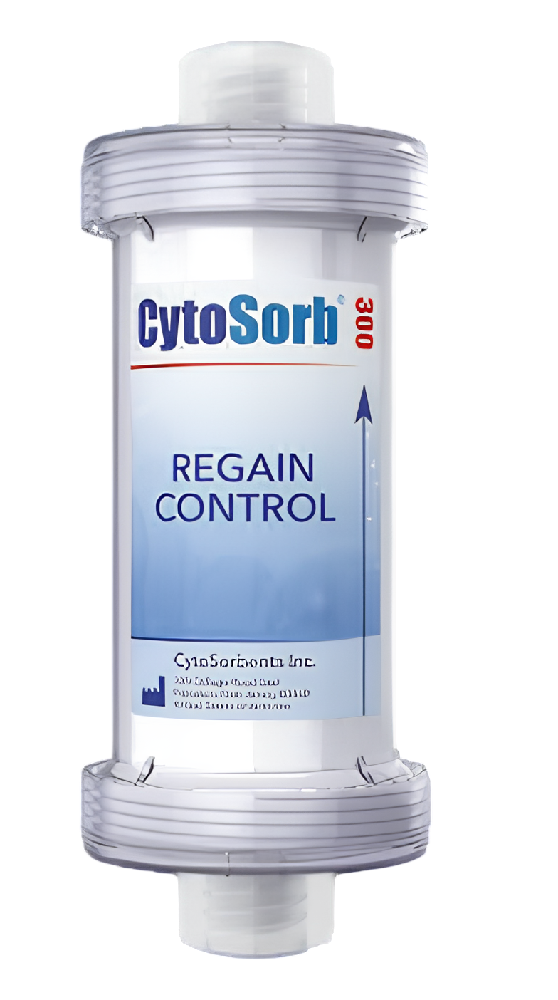

吸附 • 逆轉 • 重拾掌控

Technology & Core Advantages
Clinical Applications
點選下方適應症類別，檢視具體臨床啟動數值、更換頻率與停用指標。
支援即時輸入英文藥名或藥理分類搜尋，快速確認藥物被吸附清除程度。
* 臨床建議：以上分類依據最新體內（In-vivo）與體外（In-vitro）藥物動力學實證整理。若臨床條件允許，強烈建議搭配治療藥物濃度監測（TDM）以精準調整劑量。
* 標示 斜體（Animal data） 為動物實驗數據；標示 ** 為僅具系統性血漿濃度（Systemic plasma levels）數據。
敗血性休克啟動標準治療後 6 小時進行評估。當 CytoScore > 6 分時，建議於 12 小時內及早啟動 CytoSorb® 治療。
依循六大臨床適應症分類彙整國際期刊實證與專家共識（敗血症休克、急性肝衰竭、橫紋肌溶解、抗血栓清除、心內膜炎與主動脈手術、ARDS）。